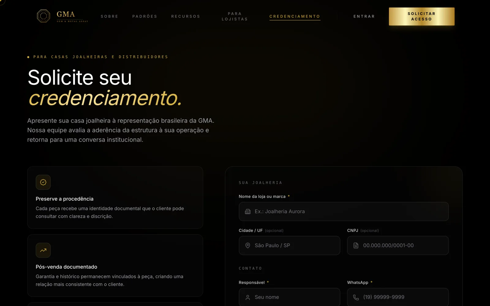

GMA
O laudo é do laboratório, e o cliente confere pelo QR

O que muda no seu negócio
A joalheria deixa de ser a única fiadora da própria palavra. Quem atesta é o laboratório, e o comprador valida sozinho, na hora, sem cadastro.
De brinde, a marca ganha um dado que antes dependia do relatório da loja: cada leitura do código é sinal de que a peça foi vendida, com lugar e data.
O problema
Quando uma joalheria diz que o ouro é 18 quilates e a pedra é natural, quem garante é ela mesma. Do outro lado do balcão, ninguém tem como conferir.
A GMA separa quem vende de quem atesta. O laudo só vira certificado se for conclusivo, o número do cartão tem dígito verificador, e a cadeia de posse da peça fica registrada até o dono atual.
O que o sistema faz
- Consulta pública do laudo pelo número do cartão ou pelo QR, sem cadastro.
- Emissão de certificado com rascunho salvo mesmo sem internet.
- Credenciamento de joalherias só por convite, com fila de análise.
- Painel da marca com inteligência de leitura: onde e quando cada peça foi conferida.
- Garantia, clientes e transferência de posse da peça.
- Esteira de produção, folha de gravação a laser e etiquetas.
- Aplicativo instalável, em português, inglês e francês.
Telas

O que prova a engenharia
- 146
- testes automáticos
- 83
- regras de acesso dentro do banco: cada loja só enxerga o que é dela
- 60
- migrações de banco, todas reaplicadas do zero a cada entrega
- 4
- conferências automáticas antes e depois de publicar
A permissão mora no banco, não na tela
Mesmo que alguém burle a interface, o banco recusa: cada linha sabe a que organização pertence. É a única forma de isolar lojas de verdade.
Se falta credencial, o teste reprova
Conferência que pula em silêncio e aparece verde é pior que não ter conferência. Aqui, o que não pôde ser verificado conta como falha.
Stack
React 18, TypeScript e Vite, com Supabase (Postgres) e publicação na Vercel. Aplicativo instalável com funcionamento offline.